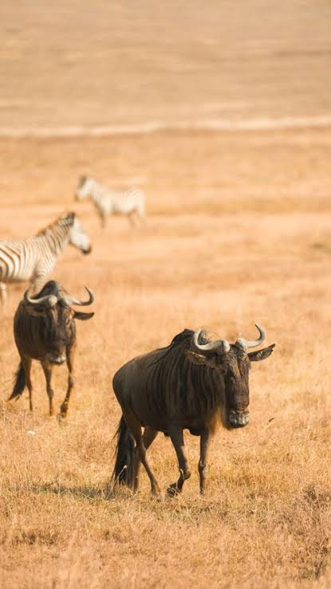

El búfalo africano (Syncerus caffer), también conocido como búfalo cafre, es un gran mamífero bóvido nativo del África subsahariana y uno de los integrantes del grupo de los Cinco Grandes de África. Características principales • Nombre científico: Syncerus caffer • Peso: Entre 300 kg y 900 kg (los machos adultos grandes pueden pesar hasta casi una tonelada). • Tamaño: Mide entre 1 y 1.7 metros de altura a la cruz y de 2.1 a 3.4 metros de longitud. • Cuernos: Su rasgo más distintivo son sus gruesos cuernos curvos que se unen en la frente de los machos formando un escudo óseo duro llamado "masa". • Color de pelaje: Varía del pardo oscuro al negro (o rojizo en algunas subespecies como el búfalo de bosque). • Esperanza de vida: Entre 11 y 22 años en estado salvaje. Hábitat y distribución • Región: Habita en las sabanas, bosques, matorrales y selvas de África subsahariana (desde Etiopía y Kenia hasta Sudáfrica). • Dependencia del agua: Necesita beber unos 30 litros de agua al día, por lo que su presencia está ligada a zonas con fuentes hídricas permanentes. • Subespecies reconocidas: Búfalo del Cabo, búfalo de la sabana de África Occidental, búfalo de la sabana de África Central y búfalo de bosque africano.